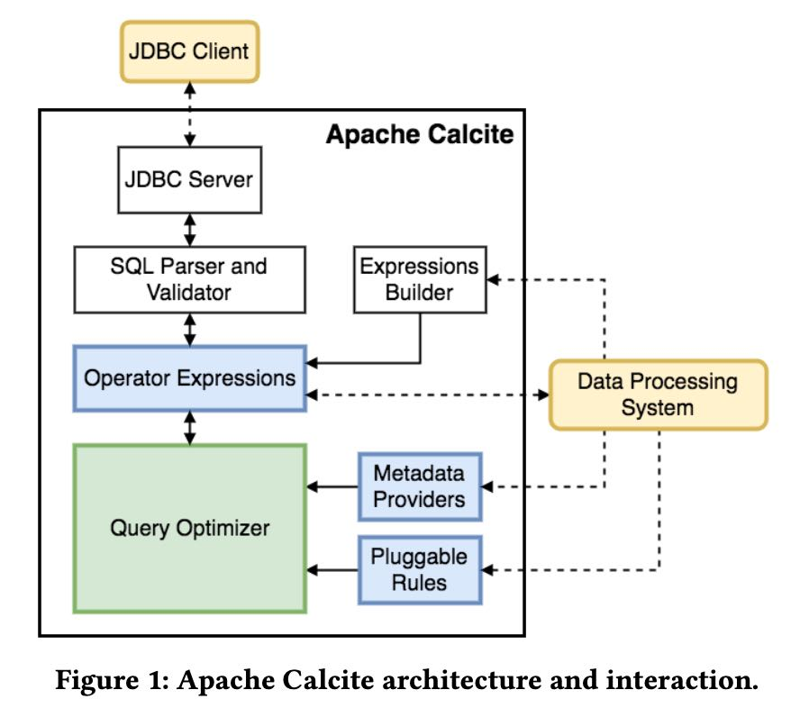

Apache Calcite: A Foundational Framework for Optimized Query Processing Over Heterogeneous Data Sources
文章副标题是 A Foundational Framework for Optimized Query Processing Over Heterogeneous Data Sources 为各种异构数据源做实现一套查询优化框架。
问题的背景是下面这样的：查询语言多种多样并不受限于SQL，还可能是LINQ或者是其他DSL甚至是表达式；而数据源可以是ES, Spark, Druid等等
As organizations have invested in data processing systems tai- lored towards their specific needs, two overarching problems have arisen:
- The developers of such specialized systems have encoun- tered related problems, such as query optimization [4, 25] or the need to support query languages such as SQL and related extensions (e.g., streaming queries [26]) as well as language-integrated queries inspired by LINQ [33]. With- out a unifying framework, having multiple engineers inde- pendently develop similar optimization logic and language support wastes engineering effort.
- Programmers using these specialized systems often have to integrate several of them together. An organization might rely on Elasticsearch, Apache Spark, and Druid. We need to build systems capable of supporting optimized queries across heterogeneous data sources [55].
Calcite几个比较重要的特点如下：
- 多种数据模型，主要还是支持时序
- 灵活的查询优化器，扩展优化策略和算法
- 各种异构数据源，允许在上面做查询优化
- 支持SQL以及其他查询语言扩展，最重要的是一套公共接口
- Multiple data models. Calcite provides support for query optimization and query languages using both streaming and conventional data processing paradigms. Calcite treats streams as time-ordered sets of records or events that are not persisted to the disk as they would be in conventional data processing systems.
- Flexible query optimizer. Each component of the opti- mizer is pluggable and extensible, ranging from rules to cost models. In addition, Calcite includes support for multiple planning engines. Hence, the optimization can be broken down into phases handled by different optimization engines depending on which one is best suited for the stage.
- Cross-system support.The Calcite framework can run and optimize queries across multiple query processing systems and database backends.
- Support for SQL and its extensions.Many systems do not provide their own query language, but rather prefer to rely on existing ones such as SQL. For those, Calcite provides sup- port for ANSI standard SQL, as well as various SQL dialects and extensions, e.g., for expressing queries on streaming or nested data. In addition, Calcite includes a driver conforming to the standard Java API (JDBC).
不太明白这两种算法之间的差别，从后面的内容看上去，multi-stage optimization是第一种的扩展来减少探索量，将优化分为多个阶段，每个阶段只使用部分规则进行探索。
In the current version of Calcite, the query optimizer architecture uses dynamic programming-based planning based on Volcano [20] with exten- sions for multi-stage optimizations as in Orca [45].
Calcite的架构图如下，可以看到除了优化器还有其他组件：
- JDBC Server以及SQL Parser，这个不算是优化器部分，但是可以自己做SQL扩展
- SQL被解析成为Operator Expressions，可以认为是逻辑表达式Logical Operator Expression
- Operator Expression也可以通过Expression Builder来创建，以便对接非SQL(比如LINQ, PIG)
- Operator Expression被送入Query Optimizer, 结合Meta信息以及Rules进行优化
- 最终产生的物理计划Physical Operator Expression被送到Data Processig System

(这个traits可能就是volcano里面说的properties)
逻辑计划和物理计划并没有显著的差别，如果不做任何优化，拿到一个逻辑计划基本上也可以去执行。他们之间的差别可能在于，物理计划上存在某些traits(特征), 这些特征是和数据源系统，数据分析以及某些假设相关的(比如CPU, network costs)等等。一个逻辑计划上也可以增加上不同的traits, 最终得到多个物理计划。一个重要的traits是calling convention, 这个词最开始函数调用之间的约定，我觉得放在这里也听恰当的：表明在访问某个数据源的时候可以什么假设和约定。为了对接 不同的数据源，用户需要定义不同的Adapters，并且上面实现各种calling conventions.
Calcite includes common traits that describe the physical proper- ties of the data produced by a relational expression, such as ordering, grouping, and partitioning. Similar to the SCOPE optimizer [57], the Calcite optimizer can reason about these properties and exploit them to find plans that avoid unnecessary operations. For exam- ple, if the input to the sort operator is already correctly ordered— possibly because this is the same order used for rows in the backend system—then the sort operation can be removed.
In addition to these properties, one of the main features of Calcite is the calling convention trait. Essentially, the trait represents the data processing system where the expression will be executed. Including the calling convention as a trait allows Calcite to meet its goal of optimizing transparently queries whose execution might span over different engines i.e., the convention will be treated as any other physical property.
This table scan operator contains the necessary information the adapter requires to issue the scan to the adapter’s backend database. To extend the functionality provided by adapters, Calcite defines an enumerable calling convention. Relational operators with the enumerable calling convention simply operate over tuples via an iterator interface. This calling convention allows Calcite to im- plement operators which may not be available in each adapter’s backend. For example, the EnumerableJoin operator implements joins by collecting rows from its child nodes and joining on the desired attributes.
Query Processing and Optimization里面中几个部分：
- Planner Rules 规则重写，除了通常的逻辑规则重写之外，还需要考虑与数据源结合的规则重写
- Metadata Providers 没有太明白为什么需要使用Janino这样的编译器，metadata result是需要缓存的因为可能会被多次访问
- Planner engines. 其中使用DP和multi-stage optimization算法都是CBO的，而穷举算法(exhaustive planner)则是不断地使用规则是RBO的
- Materialized virews 不太明白里面的具体细节，提到两种方式 view substitution 和 lattices, 但是第二种方式有许多限制。
Extending Calcite:
- Semi-structured Data 比如要查询MongoDB的话，可以使用map+隐式cast变为schema模型
- Streaming 支持流式数据查询，需要在SQL里面有first-citizen support.
- Geospatial Queries 支持地理空间查询
- Language-Integrated Query for Java. LINQ/LINQ4J 是不是这类查询语言对于在内存数据结构上做复杂查询很有效果？